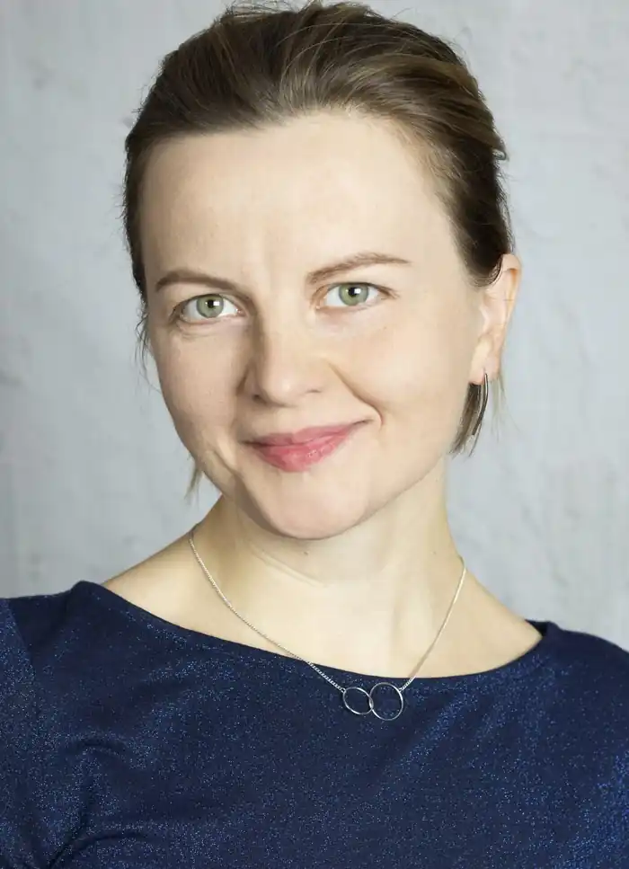
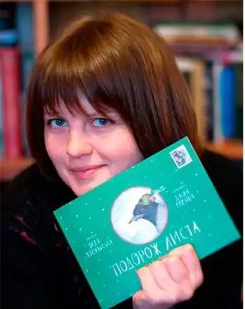

Народилася 29 серпня 1983 року в місті Фастів на Київщині. Вищу освіту здобула в Національному університеті "Києво-могилянська Академія" (магістр філології, викладач вищої школи, 2000—2006 рр.).
Як дитяча письменниця, дебютувала оповіданням "Горобине Різдво" у збірнику "Казки Різдвяного ангела" (Свічадо, 2008). 2008 року стала лауреатом конкурсу "Золотий лелека". Казки й оповідання виходили друком у збірниках "Казки Божого саду" (Свічадо, 2009), "Зимова книжка", "Весняна книжка", "Літня книжка", "Осіння книжка" (видавництво "Братське", 2009—2011), "Різдвяна чудасія" ("Братське", 2010), "Зимові історії для дітей" ("Свічадо, 2011), "Дарунок Святого Миколая" ("Братське, 2012), "На Великдень" ("Братське, 2013) та ін.
В листопаді 2011 року разом із дитячою письменницею та дослідницею дитячої літератури Оксаною Лущевською заснувала блог про дитячу літературу "Казкарка", в якому публікувалися огляди найцікавішої дитячої літератури світу. У липні 2016 року "Казкарка" зливається з культурно-видавничим проектом "Читомо" для об'єднання зусиль із популяризації якісної дитячої літератури та промоції дитячого і підліткового читання. 2014 року разом із Оксаною Лущевською та групою редакторів і літературних оглядачів заснувала професійний рейтинг дитячих та підліткових книжок "Рейтинг критика: найкращі дитячі та підліткові книжки року". Серед співзасновників — Ірина Батуревич, Оксана Хмельовська ("Читомо"), Тетяна Стус (Щербаченко), Ольга Купріян ("БараБука"), Ірина Комаренець та Міра Київська ("Букмоль"), Галина Ткачук (журнал "Однокласник"), Марія Семенченко (газета "День") та Володимир Чернишенко (критик, перекладач). 2016 року тексти В.Вздульської, як і твори кількох десятків інших сучасних письменників, включено до оновленої шкільної програми з літературного читання для молодших класів. 14 грудня 2018 року книжка "Вільям Шекспір" здобула перемогу в номінації "Пізнавальна книжка року" в "Топ БараБуки".